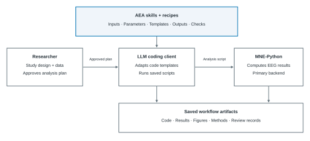
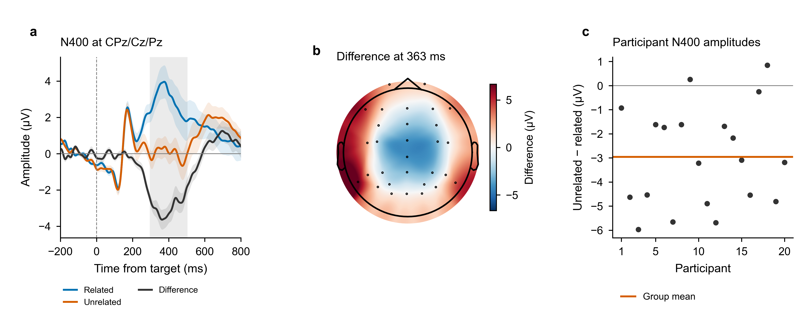

01 / 技能
分析流程
用 Markdown 记录 EEG 方法、数值约定、可执行模板、预期输出和检查。
查找技能开放的 EEG 方法库
可共享的技能与配方，将 EEG 方法、可执行工作流和可检查的结果连接起来。
面向 MNE-Python，提供可执行规范和经过数值认证的核心。
EEGLAB 扩展已获批准。 AEA 0.1.3 已列入 EEGLAB 官方扩展目录。
资源库
技能描述单项分析，配方按实验范式组合技能。研究者确定分析选择并批准方案。
01 / 技能
用 Markdown 记录 EEG 方法、数值约定、可执行模板、预期输出和检查。
查找技能02 / 配方
按范式组合技能，说明数据要求、分析选择和参考来源。
选择配方03 / 检查
提供数值比较、输出检查和审阅记录，并说明各配置的验证范围。
查看证据eeg-preprocess滤波、参考与坏导eeg-icaICA 与成分标注eeg-epoch分段与伪迹剔除eeg-erpERP 与成分测量eeg-tfr时频分析eeg-spectral功率谱与频谱参数eeg-stats统计推断eeg-decodingMVPA 与时间泛化eeg-behavior行为与试次层面的关联eeg-connectivity功能连接与有向连接eeg-microstate微状态图与时间动态eeg-complexity熵与复杂度指标eeg-source源定位eeg-bidsBIDS-EEG 转换eeg-qc数据质量检查eeg-group-compare组间比较与效应量eeg-figure绘图与数据一致性检查eeg-methods-textCOBIDAS-MEEG 方法文字eeg-audit独立模型审阅eeg-report报告与可复算记录eeg-pipeline分析编排eeg-recipe配方执行与版本记录检查适用于特定输出和配置。请参阅各技能的验证证据。
应用于自己的数据前，先阅读要求和待确认的选择。
声明状态与已有验证分别记录。复现结果时，请使用相应配方规定的配置。
| 配方 | 分析 | 声明状态 |
|---|---|---|
ern-flankers |
N2、反应相关负波、额叶 theta | 已验证 |
mmn-oddball |
听觉失匹配负波 | 已验证 |
p300-oddball |
稀有目标诱发的 P300 | 实验性已记录组水平验证结果 |
n170-faces |
人脸与非人脸对照 | 已验证 |
n170-face-inversion |
正立与倒立人脸 | 实验性 |
n400-semantic |
语义启动 | 已验证 |
alpha-attention-cueing |
后部 alpha 调制 | 实验性 |
resting-microstate |
静息态微状态图与动态 | 已验证 |
resting-spectral-connectivity |
功率谱、非周期成分拟合、连接性 | 已验证 |
complexity-anesthesia |
连续信号的复杂度与熵 | 已验证已检查清醒状态；此处尚未测试麻醉状态 |
如何工作
编程助手读取流程，调整模板并执行脚本。分析方案、代码、结果和审阅记录均保留，供研究者检查。
定义研究内容，选择配方或技能，并确认科学选择。
助手在你的环境中生成并运行代码，主要使用 MNE-Python。
审阅保存的输出、图、方法文字和检查记录，重放已记录的分析。

完整示例
按照固定 Python 教程，从语义启动配方得到保存的 epochs、参与者平均值、统计、图和方法文字。可以从保存的平均值重新计算组统计，也可以不读取原始 EEG，直接用公开数组重新作图。

固定教程需要分析环境和 Arial 或 Helvetica 字体；完整运行还需要 EEG 数据，不需要编程助手或模型账户。 准备数据 · 绘图字体.
已记录的助手案例使用 ICA、局部 AutoReject 和 1024 Hz 采样率。固定教程省略 ICA，使用 256 Hz；两者的结果分别记录。
CPz/Cz/Pz 在 300–500 ms 的分析为每位参与者、每个条件保留 60 个试次。“不相关减相关”幅值为 −2.957 µV（SEM 0.466），一个 cluster 的 p = .0002。在保存的运行中，重放完全复现了 t 图、cluster 掩码、p 值和置换零分布数值，也可以从精简的公开数组重新生成图。
这一记录分支省略 ICA 和幅值剔除。示例中的 20 人队列小于来源数据的 40 人队列，其 ROI 检验与历史上的全通道认证分别记录。头皮图仅作描述；cluster 结果不能定位到每个电极或时间点。这个 v0.3.2 之后新增的示例不评估 LLM 成功率、时间节省、留出数据上的表现或临床效果。
这些单参与者示例在 v0.3.2 之后进行了修正。图、脚本、原始方案、阳性和零结果及修正记录均保留在历史示例中。它们不能证明总体效应或 LLM 带来的提速。
验证
认证适用于选定的输出和配置。覆盖记录区分跨工具箱比较、独立实现、行为评估和 API 检查。
ERP 幅值
在记录的设置下，将选定的 ERP 输出与 MNE-BIDS-Pipeline、EEGLAB 和 FieldTrip 比较。
Cluster 统计
在随库提供的配置下，将选定 cluster 检验的 t 图与 cluster 分区同 FieldTrip 比较。
频谱功率
固定数值约定后，使用独立实现检查频带功率。
这些比较不等于每个选项或生成的工作流都已认证。主要计算后端是 MNE-Python，EEGLAB 和 FieldTrip 也提供部分替代路线。
AEA 读取流程日志，生成 COBIDAS-MEEG 方法段落。数字均从磁盘上的文件读取，不依赖记忆。
使用 AEA
先安装 Git、Conda 和已登录的 Codex CLI 或 Claude Code。以下命令使用 main，包含 v0.3.2 之后的修正。
git clone https://github.com/dengzhe-hou/auto-eeg-analysis.git
cd auto-eeg-analysis
conda env create -f environment.yml
conda activate aeais
python tools/install_skills.py --agent codex
codex$eeg-recipe n400-semantic --data projects/my-studygit clone https://github.com/dengzhe-hou/auto-eeg-analysis.git
cd auto-eeg-analysis
conda env create -f environment.yml
conda activate aeais
python tools/install_skills.py --agent claude
claude/eeg-recipe n400-semantic --data projects/my-study在仓库根目录运行，并保持分析环境已激活。将兼容数据放入 projects/my-study/raw/，选择适合范式的配方。使用 ERP CORE 时，请参照可直接复制的 N400 说明与批准提示，保留现有数据布局。
检查识别到的数据，执行前确认分析方案。请为此路线的默认审阅阶段配置审阅模型，使用 Claude Code 执行分析时也一样。
安装指南说明了共享 Python 环境、数据格式、研究目录和输出文件。Windows 与可选依赖请参阅平台支持，也可以选择固定版本。
使用 EEGLAB？打开 File > Manage EEGLAB extensions，搜索 AEA 并安装 0.1.3 版。按扩展配置指南连接 AEA 源码目录和编程客户端。Windows 用户可参阅首次报告教程，了解客户端安装、执行文件路径、菜单设置和报告打开方式。在固定合成数据上，使用真实 Codex 和 Claude 客户端的 Windows MATLAB 路线已通过独立结果检查和重放。
EEGLAB 0.1.3 预览版新增 MATLAB 原生配置教程，无需 Python/MNE 即可准备研究，并在限定范围内生成 ERP 均值、图和报告。请搭配对应版本的源码与插件包；较早的 0.1.2 ZIP 使用 MNE 路线。
主页与仓库 README 提供英文、简体中文和日文版本。详细指南、技能与配方源文件、图中文字、EEGLAB 菜单及固定报告模板目前仍以英文为主。可以用中文或日文与编程助手讨论研究。
项目资源
AEA 基于 ARIS 架构和 EEG 领域知识构建，使用 MNE-Python 计算。重要贡献者将受邀成为 AEA 论文的共同作者，详见贡献指南。